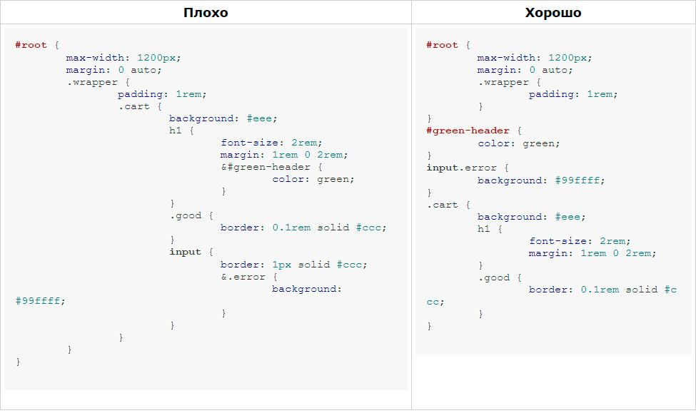

Несколько советов less-разработчику
21 октября 2013 в 19:44 время чтения 10 минут
Зачастую, создавая less-файлы (что, впрочем, касается и других препроцессоров css), мы гонимся за красотой и элегантностью less-кода, когда как частенько забываем про скомпилированный css-код. Иногда это влечет за собой критичные последствия, когда объем конечного css возрастает в раз, а код становится совершенно нечитаемым.
- 1) Эта статья подойдет как для SASS/SCSS-разработчиков, так и для CSS-писателей.
- 2) Приведенные примеры кода не идентичны, но в большинстве случаев взаимозаменяемы и написаны для иллюстрации советов.
Disclaimer
1) Не делайте слишком длинных вложений
Когда мы пишем обычный css-код, обычно не получается такой проблемы. Врядли мы напишем перед css-свойствами цепочку из 10 элементов. А вот с древовидной структурой less-кода, такое вполне вероятно. Упрощайте свои «лесенки» кода. Выделяйте отдельные блоки и выносите их. Особенно это касается универсальных классов и id. Длинные цепочки селекторов утяжеляют файл стилей, затрудняют его чтение, порой объем css-файл может увеличиваться из-за излишней вложенности в два раза.
2) Опасайтесь селекторов через запятую
Если мы поставим в начале вложения селекторов (из примера выше) два или более селекторов через запятую, то все-все правила продублируются столько раз, сколько мы поставили селекторов вначале. Говоря об оптимизации веса получившегося css-файла, можно судить о десятках килобайт. Особенно опасно использовать селекторы через запятую, когда они вложены уже в селекторы, которые так же оформлены через запятую. Один из тяжелых случаев представлен ниже
Продолжение по ссылке >>